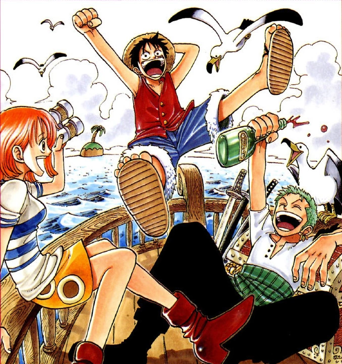

Seven-year-old Monkey D. Luffy befriends the Red Hair Pirates and swears to their captain, Shanks, that he will become a great pirate. Ten years later, Luffy sets sail and confronts the brutish female pirate Alvida. He then travels to Shells Town, which is ruled over by the tyrannical Marine Captain Morgan. There he meets "Pirate Hunter" Roronoa Zoro, a dangerous criminal whom he wishes to become his first crewmate.
Romance Dawn: The Origin of an Adventure!
Gold Roger, the Pirate King, had attained enormous wealth, fame, and power. Before he was executed, he announced to the crowd that he had left all his treasure at a certain place, causing the world to enter the Great Age of Pirates.
Suddenly, a group of mountain bandits led by Higuma entered the bar and demanded alcohol. The bartender Makino told them that the pirates had drank all of it already, and when Shanks offered Higuma the last bottle, he responded by breaking it over Shanks' head, not fearing the pirate due to his 8,000,000 beli (beli=jp yen) bounty. Shanks simply responded by apologizing and cleaning up the mess, causing Higuma to break some more dishes before leaving with his gang. Afterwards, the Red Hair Pirates just laughed, but Luffy was angry at Shanks for not standing up for himself. He stormed out of the bar, and Shanks tried to grab his arm to hold him back, but to his shock Luffy kept walking as his arm stretched like rubber. The Red Hair Pirates then realized that the Devil Fruit they had stolen, the Gomu Gomu no Mi, was no longer in its chest, and Luffy confirmed that he had eaten it for dessert. Shanks revealed that Luffy's body was now made of rubber due to eating the Devil Fruit, and he would be unable to swim for the rest of his life.
Shanks and the Red Hair Pirates then returned, and when one of the bandits pointed his gun at Shanks, the pirate Lucky Roux shot him. Shanks stated that he could accept an insult toward him, but would not forgive anyone who harms his friends. His first mate, Benn Beckman then overpowered the bandits singlehandedly, though Higuma managed to escape with Luffy in tow by throwing a smoke bomb. Higuma took Luffy out to sea and kicked him off the boat to drown him, and as Luffy struggled to stay afloat, a Sea King known as Lord of the Coast came to eat Higuma. It then moved to eat Luffy, but Shanks arrived in the nick of time to save Luffy and scare the beast away. Shanks was glad Luffy was okay, but Luffy was saddened that he had lost his arm in the process of saving him.
Later, the Red Hair Pirates were preparing to leave Foosha Village for good. Luffy had decided that he would not try to join them and declared that he would form his own crew that would be stronger than Shanks', find the greatest treasure, and become the Pirate King. To take Luffy up on his word, Shanks gave him his straw hat and told him to return it once he had surpassed him. As the Red Hair Pirates set sail, Shanks and Beckman both anticipated Luffy doing big things in the future.
On the High Seas: Luffy's First Voyage
Ten years later, Luffy set sail on his own in a small rowboat. The Lord of the Coast came to confront him, and he quickly took it out with Gomu Gomu no Pistol, where he stretched his arm forward and unleashed a long-range punch. As he drifted out to sea, Luffy plotted to recruit at least 10 crewmates, make a Jolly Roger, and become the Pirate King. However, he quickly ran into trouble as his boat was pulled into a whirlpool with no way of escaping.
Meanwhile, a pirate ship was docked at a remote island. The captain, Alvida, abused her subordinates for not working to clean the ship, especially the cabin boy Koby, whom she sent ashore to their base. Koby found a barrel that had washed ashore and rolled it to the wine cellar, and three of his crewmates, thinking the barrel had alcohol in it, decided to open it and drink in secret. To their shock, however, Luffy burst out of the barrel, having taken a nap inside it. The resulting commotion caused Alvida to throw her giant mace into the building and cause it to collapse, and her three henchmen told her about Koby bringing in Luffy as they had both escaped
Luffy and Koby went into the nearby forest, and the former asked the latter if he had a small boat. Koby showed Luffy the small boat he had made himself in order to escape from Alvida after accidentally falling into her crew's clutches two years ago, but he let Luffy have it since he was too afraid to run away from Alvida. Luffy did not think much about Koby and his cowardice, saying he did not mind dying for the sake of achieving his dream of becoming the Pirate King and finding the One Piece. This caused Koby to contemplate making the effort to achieve his own dream of joining the Marines and arresting pirates like Alvida. Suddenly, Alvida and her crew came to confront Luffy and Koby as she destroyed the latter's boat. Alvida gave Koby the chance to stay alive by calling her the most beautiful in all the seas, but Luffy then insulted her offhandedly when asking Koby who she was. Koby initially started berating Luffy, but then remembered what he had told him and decided to stand up to Alvida and insult her instead. Alvida prepared to hit Koby with her mace, but an impressed Luffy then jumped in and intercepted the mace, with it not hurting him due to his rubber body. He then hit Alvida to the ground with Gomu Gomu no Pistol and told her crew to get Koby a boat, to which they quickly complied.
Against the Oppressive Axe: Recruiting a Swordsman and Skirmishing with Marines
As they sailed away, Koby noted that for Luffy to achieve his dream he would have to enter the Grand Line, a place known as the pirate's graveyard. Luffy responded that he would form a powerful crew to survive it, and decided to recruit the bounty hunter and Marine prisoner Roronoa Zoro after hearing about him from the Alvida Pirates; this shocked Koby, who believed Zoro to be a demonic beast. Thanks to Koby's navigation skills, the duo were able to reach Shells Town, where the Marine base holding Zoro was stationed. Luffy and Koby ate at a restaurant before they intended to part ways, and the customers around them jumped when Luffy mentioned Zoro's name. Koby then recalled noticing that Captain Morgan was at this base, and to his surprise, the customers jumped again after hearing Morgan's name
Luffy returned to Shells Town and told Rika this, to her delight. She revealed that Captain Morgan and Helmeppo ruled harshly over the town and had people put to death for little reason; Zoro had done nothing wrong, as he was arrested after saving her from one of Helmeppo's ferocious dogs. Helmeppo then came walking into town and ordered the citizens to bow down to him. He stated that Zoro would be executed in three days, causing Luffy to confront him over the promise he made. Helmeppo revealed that he was only joking about that, causing Luffy to punch him to the ground. Koby had to hold Luffy back from attacking him further, but Helmeppo promised to tell his father and get his revenge. As the citizens retreated into their homes, Luffy headed back to the Marine base to recruit Zoro again
When he was young, Zoro trained in a dojo and had lost in practice duels to Kuina, the dojo master Koushirou's daughter, 2000 times in a row. He was frustrated over his losing, and one night challenged Kuina to a duel with real swords. Kuina beat him again, and Zoro became even more frustrated, but she then revealed that she was frustrated too as she was entering puberty and her father had said that men would always eclipse women in strength. This made Zoro mad, as he wanted to beat her because he had worked hard rather than because of his gender. He and Kuina then made a promise with each other that they would each work to become the Greatest Swordsman in the World and duel each other for the title. The next day, however, Zoro found out that Kuina had died after falling down the stairs. He asked Koushirou if he could have her sword, and emotionally declared that he would fulfill their promise for both of them and become the greatest swordsman possible.
In the present, as the Marines shot at Koby and Zoro, Luffy jumped out of the window and landed in front of them, causing the bullets to hit his body and ricochet back at the Marines. Luffy presented the swords to Zoro, who revealed that he wielded all three of them as a Three Sword Style user. With the Marines now unquestionably against him, Zoro decided to take up on Luffy's offer and become a pirate. The Marines then took out their swords and charged toward Luffy and Zoro, and Zoro told Luffy to give him his swords, allowing him to cut himself free and intercept all of the Marines at once. Luffy then hit all of the Marines with a stretched leg to knock them away. Morgan ordered his men to shoot themselves for their incompetence, and Luffy charged to fight him. Luffy quickly got the upper hand against Morgan, but Helmeppo then held Koby at gunpoint to stop Luffy from harming his father. Koby did not flinch in the face of death, and Luffy simply punched Helmeppo with Gomu Gomu no Pistol. Morgan rose back up to attack him from behind as he did this, but Zoro quickly cut him down. As Morgan and Helmeppo lay defeated, the Marines started celebrating.
Luffy, Zoro, and Koby went to Rika's mother's restaurant to eat, and Luffy and Zoro plotted to head for the Grand Line. Koby warned them against this as their friend but thanked them for teaching him to stand up for himself. The Marines then came to the restaurant, and although they were grateful to the pirates for defeating their captain, they still asked for them to leave. Luffy and Zoro did so, and the Marines asked Koby if he was going with them. Luffy then started to tell them about Koby's history with Alvida, causing Koby to punch him. Luffy punched back and started a brawl, causing the Marines to believe they were not friends. As Luffy and Zoro left, Koby asked the Marines to let him enlist, promising to work any job. Although one soldier still did not trust him, the chief Marine accepted his request. As Luffy and Zoro set sail, Koby then arrived to salute them, and to his surprise he was joined by the rest of the Marines in thanking the pirates. Luffy told Koby they would meet again and looked forward to heading for the Grand Line.